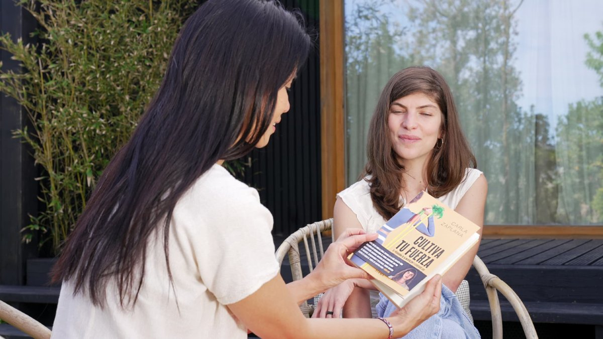

(1).png)
Entrenamiento y alimentación para ganar fuerza y salud
Hace pocos años, el entrenamiento con peso o resistencia era casi una exclusiva del público masculino. Las mujeres centrábamos nuestro ejercicio físico en prácticas aeróbicas o cardiovasculares, o bien de flexibilidad y movilidad. El temor a que los pesos pudieran dañar nuestros huesos o articulaciones, ...
Leer el artículo completo